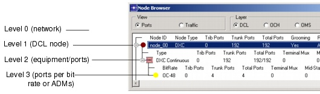

Viewing and Configuring Objects > Node Browser > DCL Node Browser
DCL Node Browser
Table 4-9-DCL Node Browser: Treeview describes the fields that are shown in the DCL Node Browser.
Figure 4-14 DCL Node Browser (Ports View)

- Node ID
- Node Type—DXC, IXC, or TM
- Trib Ports—Number of cross-connected tributary ports in equivalent STS-1 or STM-1 units (total for node)
- Trunk Ports—Number of cross-connected trunk ports in equivalent STS-1 or STM-1 units (total for node)
- Total Ports—Number of cross-connected ports in equivalent STS-1 or STM-1 units (total for node)
- Grooming—Whether grooming is allowed within the node or not. If Yes, SP Guru Transport Planner can switch DCL traffic within this node. If No, SP Guru Transport Planner aggregates all add/drop DCL traffic in wavelengths (using terminal multiplexers) and switches all transit traffic at the OCH layer.
- Ring interconnection—The method SP Guru Transport Planner uses to interconnect rings: using back-to-back ADMs, using ADMs with an intermediate DXC or via the MSSP (see SONET Nodes: ADM)
- Change to <node_type>
- Set Allowed XC Types..."
- Set DXC Type (DXC nodes only)
- Set IXC Type (IXC nodes only)
- ADM back-to-back
- ADM plus DXC
- MSSP
In Traffic view, this level includes the following right-click menu operations:
(Traffic view)
(Ports view)
- Type—Equipment type
- Trib Ports—Number of tributary ports cross-connected by equipment type (in equivalent STS-1 or STM-1 units)
- Trunk Ports—Number of trunk ports cross-connected by equipment type (in equivalent STS-1 or STM-1 units)
- Total Ports—Number of ports cross-connected by equipment type (in equivalent STS-1 or STM-1 units)
- Terminal Mux—Number of terminal multiplexers
- Mid-Stage Mux—Number of mid-stage multiplexers
(Ports view)
| Home © 1987-2007 OPNET Technologies, Inc. All Rights Reserved. This software may be covered by one or more U.S. Patents. See complete patent notice in the Legal Notices section. OPNET Support Center |